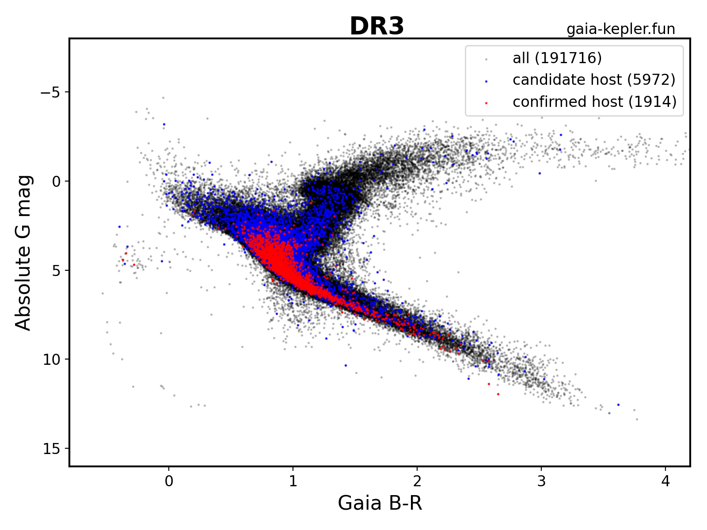

This website provides cross-matched catalogs of Gaia data for stars observed by Kepler/K2.
Scroll down to download the data as binary FITS tables ready to be read by Astropy.
Website made by Megan Bedell (Flatiron Institute).
Here's a color-magnitude diagram for all KIC objects with Gaia G < 18 and parallax > 0.1 milliarcseconds. Fainter stars may have less reliable parallaxes. Stars with candidate planets are blue, stars with confirmed planets are red, and all stars with no known planets are black.
DOWNLOAD DATA: FITS (20" search radius), FITS (4" search radius), FITS (1" search radius), FITS (one-to-one match)
This is a cross-match with the NASA Exoplanet Archive q1_q17_dr25_stellar catalog consisting of all stellar targets with long-cadence observations from Kepler; see here for detailed descriptions of the KIC data columns. For descriptions of the Gaia columns see here.
KEPLER: FITS (20" search radius), FITS (4" search radius), FITS (1" search radius)
K2: FITS (20" search radius), FITS (4" search radius), FITS (1" search radius)
CONFIRMED PLANETS: FITS (1" search radius)
First download whichever data set you wish by clicking on the appropriate FITS file above and downloading from Dropbox. Depending on your use case, you may wish to download the query results using a 4 or 20 arcsecond search radius around the Kepler/K2 coordinates (to ensure that multiple sources falling within the same Kepler pixel or multi-pixel aperture are included) or using a 1 arcsecond search radius (to limit matches to the most likely Gaia counterpart to the Kepler/K2 catalog source).
To load the data quickly in python:
from astropy.table import Table
data = Table.read('filename.fits', format='fits')
From here, you may wish to inspect the header information, including column names and units:
print(data.info)
You can also export the table in a variety of alternative formats with the data.write() function or convert it to a pandas dataframe as data.to_pandas().
Why does a KIC have multiple Gaia matches? Gaia has significantly higher angular resolution and goes to fainter magnitudes than Kepler. This means that often what appears as a single point source in Kepler is resolved into multiple sources in Gaia. Multiple matches are a feature, not a bug!
Why does a Gaia source have multiple KIC matches? In the case that both Kepler and Gaia resolve multiple sources within a small patch of the sky, it won't be obvious which Gaia ID matches with which KIC. In this case you may see multiple rows for each possible match.
Which cross-match radius should I choose? This answer depends on your science goals. If you want a direct and high-confidence match between single Kepler sources and single Gaia sources, you want the "one-to-one" table. If you want to include Kepler sources that are resolved into multiple Gaia counterparts, the 1" or 4" radius cross-matches are the best choice. If you want to be aware of any Gaia source that may fall within the Kepler PSF for a given KIC, the 20" radius match will include them all.
How was the one-to-one table made? KICs that made it into the one-to-one table have only one Gaia source within 1" (after propagating proper motion corrections to account for the difference in reference epoch between catalogs). Also, the match must have a (G - K) magnitude difference of less than 2 mag, and an angular separation between Gaia and Kepler sources of less than 1 arcsecond. This isn't a totally foolproof method but it should cut out most bad matches (at the slight penalty of dropping some good matches). There are about 2000 Kepler sources with one or more Gaia matches within 1" that got dropped from the one-to-one table one or more of the above reasons; you can still find them all in the 1" search radius cross-match catalog.
Why is there Gaia information missing from this table?
The Gaia columns included in this cross-match are limited to the gaia_source_lite catalog. If you want more information or some auxilary data (e.g. RVS or XP spectra), currently you'll need to save the source IDs that you want and query the Gaia archive for them.
The data provided on this website come from the European Space Agency (ESA) mission Gaia, processed by the Gaia Data Processing and Analysis Consortium (DPAC). Funding for the DPAC has been provided by national institutions, in particular the institutions participating in the Gaia Multilateral Agreement.
Data on this website also come from the Kepler mission, funding for which is provided by the NASA Science Mission directorate. Access to these catalogs was provided by the NASA Exoplanet Archive, which is operated by the California Institute of Technology, under contract with the National Aeronautics and Space Administration under the Exoplanet Exploration Program.
We use the astropy python package for processing.
This project was developed in part at the Gaia Fête, held at the Flatiron institute Center for Computational Astrophysics in 2022 June.
Feel free to use these data as you wish, but please be sure to cite the relevant Gaia and/or Kepler catalog papers in any resulting publications. Should you wish to acknowledge this website, here is a suggested wording: "This work made use of the gaia-kepler.fun crossmatch database created by Megan Bedell."
Questions? Complaints? Compliments? Email or tweet me!
Thanks for reading this. Here, have a puppy.